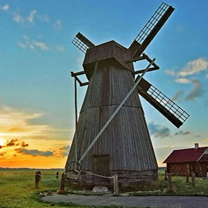
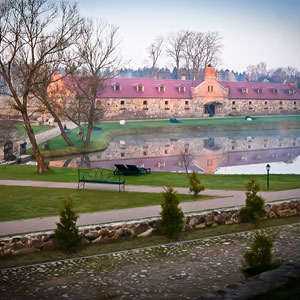
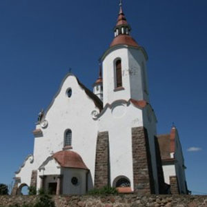
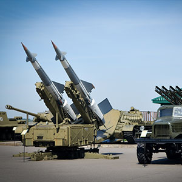
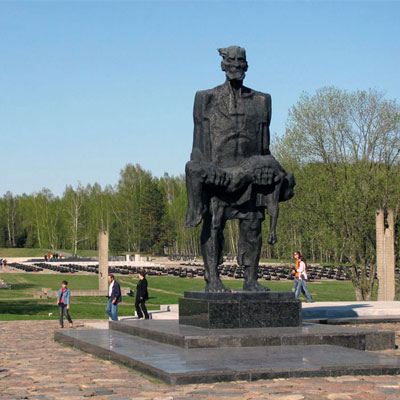

O mnie
Каб любіць Беларусь нашу мілую, трэба ў розных краях пабываць!
Kocham Białoruś!
Moja Białoruś jest najlepsza. Wątpisz? Przyjedź, a pokażę Ci prawdziwą Białoruś. Razem zapoznamy się z historią, zagadkami i tajemnicami białoruskich miast oraz miasteczek.
Licencja
21.10.2016 zostałam licencjowanym przewodnikiem po egzaminie w Krajowej Agencji Turystycznej. Licencja ważna do 21.10.2021г.
Doświadczenie
Wycieczki zaczęłam prowadż=xić jeszcze w czasie studiów. Po raz drugi biorę udział w “Festynie przewodników”, gdzie opowidam o stidenckim życiu Mińska. Odbyłam praktykę zawodową w TEUP «Belarustourist».
Witaj, mój drogi turyście!
Mam na imię Inna, mam 22. Jestem przewodnikiem. Absolwentka Wydziału Historii БГУ, kierunek studiów – Dziedzictwo kulturowe i turystyka.
Jeszcze w szkole mi się bardzo spodobało podróżować po Białorusi. Co roku gdzieś wyjeżdżaliśmy. Pamiętam, że w 8 klasie, kiedy byliśmy na wycieczće dwudniowej w Brześciu, z ciekawością "obserwowałam" naszego przewodnika i w myślach «prymierzałam» sobie zawód przewodnika i «organizatora jakiejś podróży». Od tej chwili poważnie pomyślałam o zawodzie przewodnika i stopniowa zaczęłam się rozwijać w tym kierunku. Jak się okazało, ten proces nie ma końca, ponieważ każda wycieczka pomaga się rozwijać, doskonalić swoje umiejętności zawodowe, dowiadywać się czegoś nowego, i naruralnie, zapoznawać się i rozmawiać z ciekawymi ludźmi. Jest to fajnie!
Z przyjemnością poprowadzę wycieczka dla Ciebie i twoich blizkich!
Jestem gotowa zorganizowć wyjazd z zakwaterowaniem, wyżywieniem, odwiedzaniem muzeów, aquaparku, teatrów, kwater agrotyrystycznych…
Z radością zobaczę Cię na Białorusi! Da systrečy ū Biełarusi!
Wycieczki
Miejsca, które każdy ma odwiedzić -)
1. Przeglądowa wycieczka po Mińsku
Archutekura najlepszych placów i prospektów, zieleń parków i ulic stolicy Białorusi… Żywa historia i pastecie, które pzostawiły swój ślad w rozwoju Mińska. Legendy, zagadki i tajemnicy – to wszysztko czeka na Ciebie w przeglądowej wycieczce po Mińsku.
Wycieczka trwa 3 godziny

2. Piesza wycieczka po Mińsku
W czasie wycieczki zapoznasz się z dziełem arcytektonicznym, będącym kandydatem do wpisania na Listę światowego dziedzictwa UNESCO, - пprospektem Niepodległości i leżącym obok niego placem Niepodległości.
Wycieczka trwa 2 godziny

3. Mińsk Wieczorowy
Iluminacje wieczorowe w mieście stworzą dla Ciebie i Twoich bliskim beztroski i romantyczny nasrój. Zobaczysz w wygodnym świetle jedną z głównych atrakcji Mińska – Białoruską Bibliotekę Narodową
Wycieczka trwa 2,5 godziny

4. Mir - Nieśwież
«Mir - Nieśwież» - najbardziej poularna wycieczka we wszystkie pory roku, zapozna Cię z najcenniejszymi pomnikami Białorusi, wpisanymi na listę światowego dziedzictwa UNESO, zamkiem w Mirze i zespołem pałcowym w Nieświeżu.
Wycieczka trwa 10 godzin.

5. Dudutki
Dudutki to jeden z najbardziej populanyc muzeów Białorusi, w którym można nie tylko poznawczo i ciekawie spędzić czas, ale odpocząć, spróbować miescowe produkty, w tym samogon, spróbować jazdę konną, udać się na spacer do ogru zoologicznego .
Wycieczka trwa 5 godzin

6. Puszcza Białowieska – Siedziba Dziadka Mroza
Wycieczka da Ci możliwość zapoznania się z jednym najtarszych pomników naturalnych, wpisanym na listę Światowego dziedzictwa UNESCO,- Puszczą Białowieską - jednym z głównych parków narodowych Europy, wielkim centrum turystycznym Białorusi, gdzie jadą turyści z całego świata.
Wycieczka trwa 16 godzin

7. «Ostrowiecka podróż dookoła świata»
W czasie wycieczki zaponasz się ze szczególnym zjawiskiem kultury białoruskiej - miasteczkiem. Z Tobą się zatrzymamy i zapoznamy się z historią 6 miasteczek. Tyle samo zobaczymy po drodze. Naturalnie, że czeka na nas zapoznanie się z jednym z najpiękniejszych kościołów Białorusi - kościołem pw. Trójcy Przenajświętszej w Gierwiatach z początku XX wieku.
Wycieczka trwa 10 godzin.

8. Rubażewicze – Suła
Pański majątek "Suła" - elitne snrtum życia kulturowego i świeckiego XVIII wieku. Dzisiaj zrekonstruowane posiadłość rodu Leńskich jest miejscem, gdzie pożna nie tylko odpocząć, ale zapoznać się z historią ziem białoruskich od czasów wierzeń pogańskich, epoki rycerstwa średniowiecznego, дdo czasów balów i salonów XVIII-XIX wieków.
Wycieczka trwa 6 godzin

10. Łohojsk – kwatera agroturystyczna «Hajenskie wytoki»
W Łohojsku będziesz mógł wziąc wodę ze świętego źródełka, i zobaczyć główne świątynie miasta. Potem czeka na nas wycieczka i poczęstunek od wujka Sergiusza na kwaterze agriturystycznej "Hajenskie wytoki". Ciekawie, łatwo i smacznie! Jedziemy!
Wycieczka trwa 5 godzin

10. «Staje pamięci szlaku Starowileńskiego»
Wycieczka zapozna Cię ze wspaniałą krainą, która kiedyś była nazywana Rusią Czarną, a w okresie międzywojennym Zachodnią Białorusią. Czeka na Ciebie unikatowe pomniki architektoniczne, a z nimi ciekawe historie o urodzonych w tych miejscach i wydarzeń, które tu się odbyły. W trakcie wycieczki odwidzimy takie miejscowości, jak Zalesie, Smorgonie, Kuszlany, Oszmiana...
Wycieczka trwa 10 godzin.

11. Linia Stalina
Zespół histroryczno-kulturalny «Linia Stalina» – jeden z najbardziej olbrzymich zespołów fortyfikacyjnych na terenach Białorusi. Zespół histroryczno-kulturalny «Linia Stalina» jest muzeum wojskowo-historycznym pod na wolnym powietrzu. Bazę histroyczną muzeu stanowią Stałe Stanowiska Ogniowe (DOTy) Mińskiego UR (Umocnionego rejonu).
Wycieczka trwa 5 godzin

12. w. Stańkawo – CET «Stańkawo»
Wycieczka do Stańkawa zapozna nas z wybitnym rodem ziemiańskim hrabiów Czapskich. Ta niewielka wieś była majątkiem rodowym, gdzie został pobudowany pałac i znany "Skarbiec", który się zachował do dnia dzisiejszego.
Продолжительность 5 часов

13. Chatyń – Kurhan Sławy
Kompleks cmentartny «Chatyń» - pomnik setek zniszczonych, spalonych wsi białoruskich. Wioska, która została spalona wraz ze 149 mieszkańcami. Martwa wioska, która nie pozostawia obojętnym.
Wycieczka trwa 4 godziny.

Od
23 zł za człowieka
w koszty nie są
wliczone bilety i wyżywienie
w koszty nie są
wliczone bilety i wyżywienie


{kind=link}